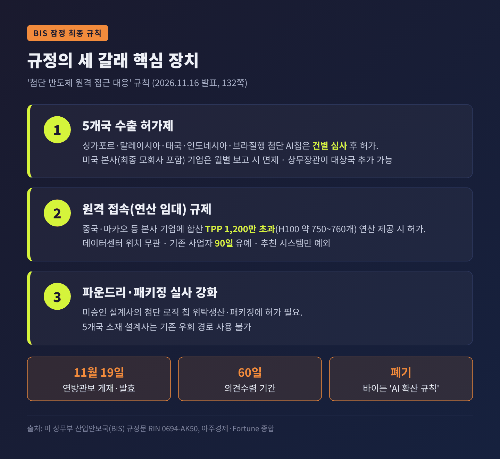
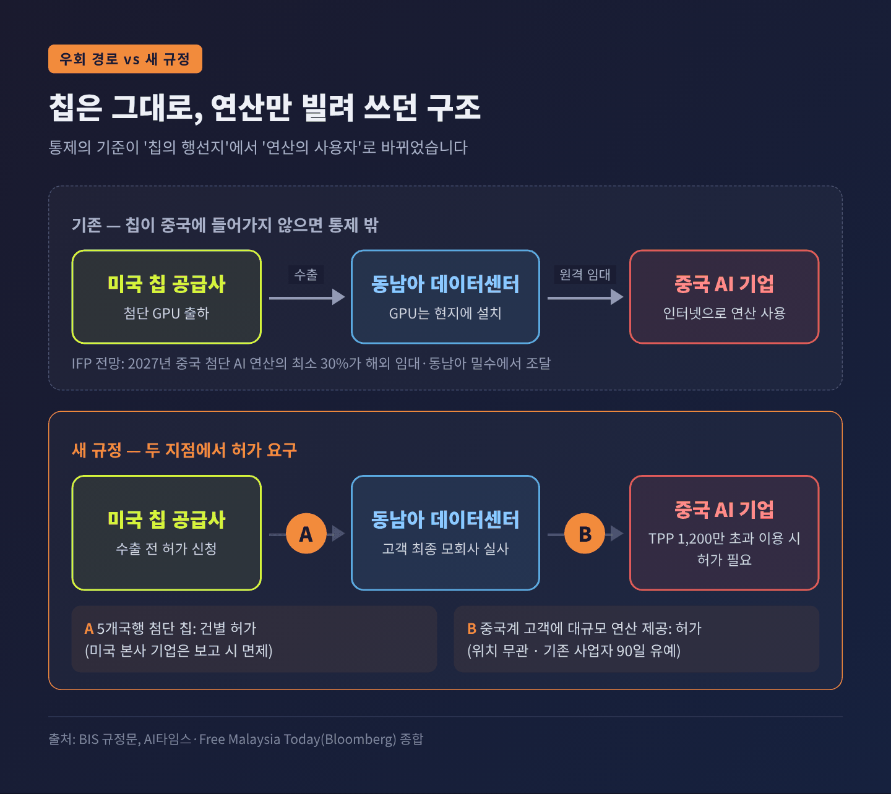
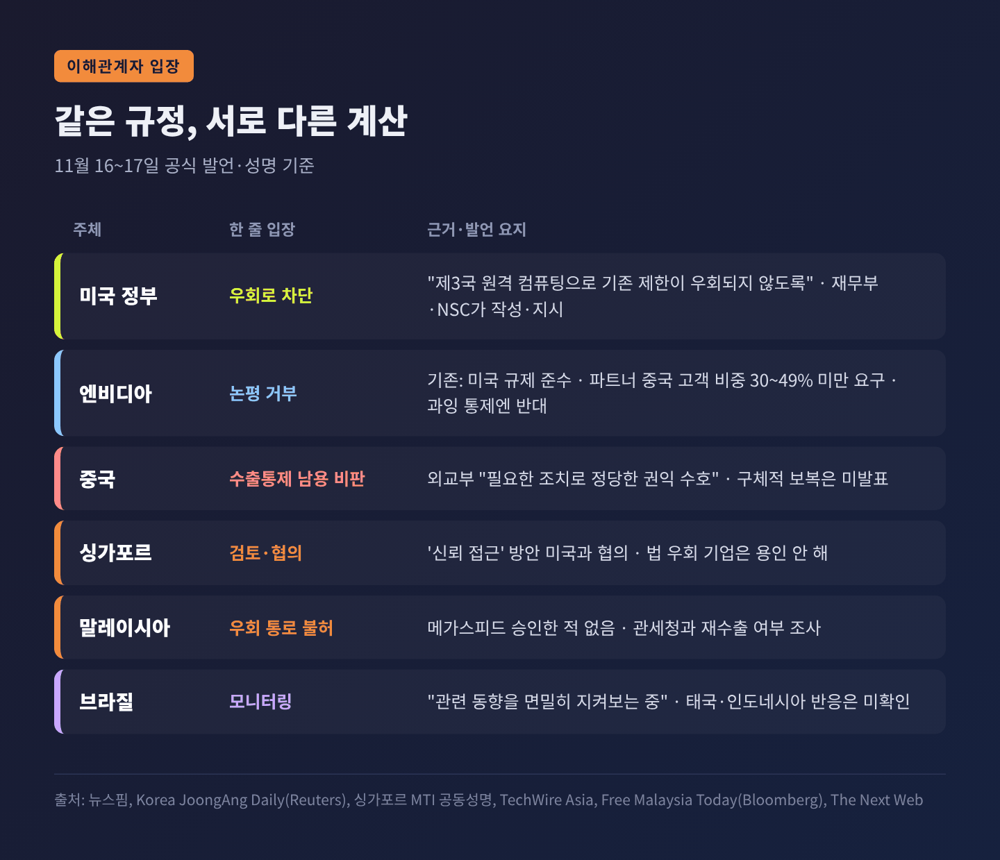
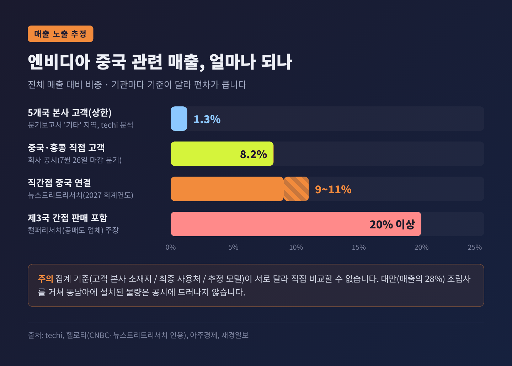
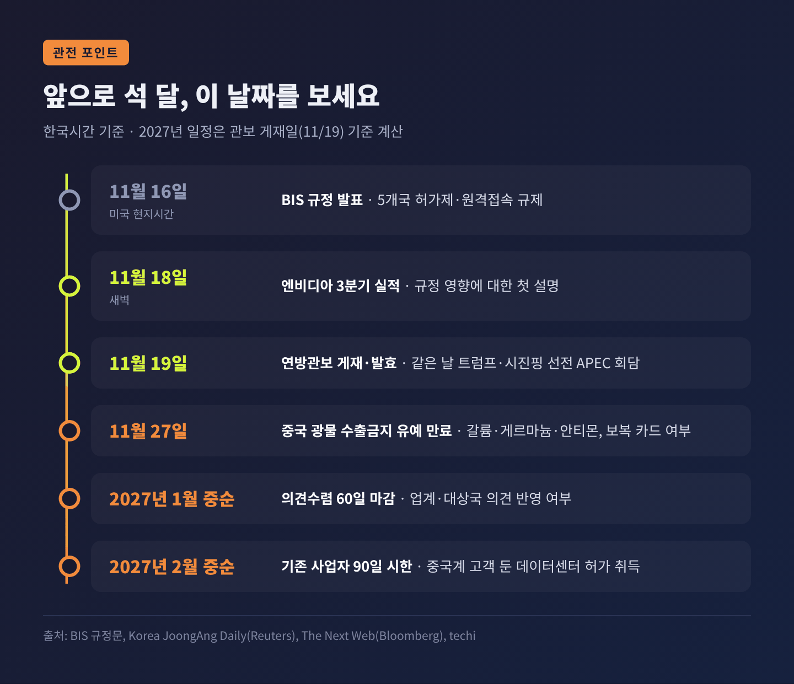

엔비디아 AI칩 수출통제 5개국 확대, 미국이 중국 원격 우회로 막았다
미국 상무부가 싱가포르·말레이시아·태국·인도네시아·브라질 5개국에 대한 AI칩 수출통제를 강화했습니다. 이번 글에서는 규정이 정확히 무엇을 바꾸는지, 그리고 칩 공급사와 동남아 데이터센터, 한국 반도체 업계에 어떤 파장이 예상되는지 정리해 보겠습니다.
세 줄 요약
- 11월 16일(현지시간) 미 상무부 산업안보국(BIS)이 잠정 최종 규칙을 내놓았습니다. 5개국으로 가는 첨단 AI칩은 이제 건별 허가가 필요합니다.
- 더 큰 변화는 '원격 임대'입니다. 중국계 기업에 일정 규모 이상의 연산능력을 빌려주는 데이터센터는 위치와 관계없이 허가 대상이 됩니다.
- 매출 영향 추정은 1%대에서 20% 이상까지 엇갈립니다. 한국은 대상국이 아니지만 데이터센터·HBM 공급망에 간접 부담이 생깁니다.

■ 무슨 일이 있었나 — 세 갈래로 조인 규정
규정의 정식 이름은 '첨단 반도체에 대한 원격 접근 대응'입니다. 분량은 132쪽입니다. 연방관보 게재일인 11월 19일부터 효력이 생기고, 의견은 게재 후 60일 동안 받습니다.
핵심 장치는 세 가지입니다.
첫째, 5개국 수출 허가제입니다. 인도네시아·말레이시아·싱가포르·태국·브라질로 첨단 AI칩을 보내거나, 그 나라 안에서 옮길 때도 미국 정부의 허가를 받아야 합니다. BIS는 이들 나라를 칩이 중국으로 빠져나갈 위험이 평균보다 높은 곳으로 봤습니다. 다만 전면 금지는 아닙니다. 심사는 건별로 이뤄지고, 상무장관이 대상국을 추가할 수 있도록 열어 두었습니다. 미국 본사 기업, 또는 최종 모회사가 미국인 기업은 매달 보고를 하면 허가가 면제됩니다.
둘째, 원격 접속 규제입니다. 중국·마카오 등 무기 금수 대상국에 본사를 두거나 그곳 자본이 최종 소유한 기업에, 합산 연산성능(TPP) 1,200만을 넘는 컴퓨팅을 제공하는 데이터센터가 대상입니다. 이 기준은 H100 GPU 약 750~760개 수준입니다. 상업용 AI 시설 대부분이 심사권에 들어온다는 평가가 나오는 이유입니다. 시설의 소재지는 묻지 않습니다. 네트워크로 연결된 시설은 연산능력을 합산합니다. 이미 중국계 고객에게 대규모 연산을 제공하던 사업자는 발효 후 90일 안에 허가를 받아야 합니다. 온라인 쇼핑·소셜미디어의 상품·콘텐츠 추천 시스템만 예외입니다. 생성형 AI는 예외가 아닙니다.
셋째, 파운드리·패키징 업체의 실사 강화입니다. 승인받지 않은 설계사가 주문한 첨단 로직 칩을 위탁생산하거나 패키징할 때도 허가가 필요해졌습니다. 5개국 소재 설계사는 기존의 우회 경로를 더는 쓸 수 없습니다.
이번 규정은 바이든 정부의 'AI 확산 규칙'도 공식 폐기했습니다. 트럼프 행정부는 2025년 5월 이 규칙을 집행하지 않겠다고 밝히고도 대체 규정을 내놓지 않았는데, 1년 반 만에 빈자리를 채운 셈입니다.

■ 왜 중요한가 — 칩의 '행선지'에서 연산의 '사용자'로
예전 수출통제는 칩이 어디로 가는지를 물었습니다. 이제는 그 칩의 연산을 누가 쓰는지를 묻습니다.
중국 AI 기업이 첨단 GPU를 손에 넣는 길은 크게 두 가지였습니다. 칩이나 서버를 몰래 들여오는 방법, 그리고 해외 데이터센터의 GPU를 원격으로 빌려 쓰는 방법입니다. 뒤의 방식은 칩이 중국 땅에 들어가지 않으므로 그동안 규정상 막을 근거가 마땅치 않았습니다. 미국 싱크탱크 IFP는 2027년 중국 첨단 AI 연산의 최소 30%가 해외 데이터센터 임대와 동남아를 통한 밀수에서 나올 것으로 내다봤습니다.
규정은 이 공백을 겨냥합니다. 사업자는 계약 상대방뿐 아니라 최종 이용자의 소유 구조와 사용 목적까지 확인해야 합니다. 고객이 정보 제공을 거부하면 그 자체가 '적신호'로 간주됩니다. 카운터포인트리서치의 닐 샤 부사장은 이를 두고 규제 준수 부담이 칩 제조사에서 클라우드 사업자와 기업으로 옮겨갔다고 평가했습니다.

■ 배경 — 메가스피드 의혹과 흔들린 집행
방아쇠는 싱가포르 클라우드 업체 메가스피드였습니다. 월스트리트저널은 11월 14일, 메가스피드가 2024년 3월부터 2025년 6월까지 약 120억달러(약 16조원) 규모의 첨단 GPU를 중국 기업에 보내는 거래를 주선한 기록을 보도했습니다. 수십만 개 단위의 주문이었습니다. 다만 실제로 배송됐는지, 어디서 출발했는지는 확인되지 않았습니다. 메가스피드는 미국 수출통제를 포함한 모든 법을 지켜 왔다며 의혹을 부인하고 있습니다. 엔비디아는 이미 2025년 6월 이 회사를 판매 금지 명단에 올렸습니다.
사건은 칩 공급사의 경영진으로 번졌습니다. 젠슨 황 CEO가 메가스피드 전직 임원과의 관계를 인정하고 물러났고, 콜렛 크레스 최고재무책임자가 임시 CEO를 맡았습니다. 그 전직 임원이 중국 정보기관과 연계됐다는 보도가 있지만, 이를 의심하는 시각도 함께 나옵니다.
워싱턴 내부의 균열도 드러났습니다. 스콧 베선트 재무장관은 네 개 부처가 메가스피드의 블랙리스트 등재를 지지했지만 주관 부처인 상무부가 응하지 않았다고 밝혔습니다. 이번 규정이 상무부 명의로 나왔지만 "재무부와 국가안보회의(NSC)가 작성하고 지시했다"고 굳이 명시한 배경입니다. 11월 14일에는 딥시크 등 중국 모델에서 블랙웰 GPU 사용 흔적이 보인다는 분석도 공개됐습니다. 연구진 스스로 수출법 위반을 입증한 것은 아니라고 선을 그었습니다.
■ 각자의 계산 — 미국·엔비디아·중국·대상국
미국 정부는 규정의 목적을 "제3국 데이터센터를 통한 원격 컴퓨팅으로 기존 제한이 우회되지 않도록 하는 것"이라고 설명합니다. 존 물레나 하원 중국특위 위원장은 미국이 허점을 막는 데 '진지하다'는 신호라고 환영했습니다. 트럼프 대통령은 "중국과 매우 좋은 관계"라며 양쪽 입장을 이해한다고 말했습니다. 시진핑 주석과의 선전 APEC 회담을 사흘 앞둔 발표였습니다.
엔비디아는 새 규정에 대한 논평을 거부했습니다. 그동안은 미국 규제를 준수한다는 입장이었고, 해외 클라우드 파트너에게 중국 고객 비중을 30~49% 미만으로 유지하도록 요구해 왔다고 알려졌습니다. 동시에 "미국 AI 인프라가 세계에서 이기지 못하면 미국도 AI 경쟁에서 이길 수 없다"는 논리로 과도한 통제에 반대해 왔습니다.
중국은 반발했습니다. 궈자쿤 외교부 대변인은 17일 미국이 국가안보 개념을 범용화하고 수출통제를 남용한다며 "필요한 조치로 정당한 권익을 단호히 수호하겠다"고 밝혔습니다. 양측이 도달한 합의에도 어긋난다고 했습니다. 아직 구체적 보복은 없습니다. 11월 27일 끝나는 갈륨·게르마늄·안티몬 대미 수출금지 유예가 대응 카드로 거론됩니다.
대상국의 반응은 결이 다릅니다. 싱가포르 정부는 공동성명에서 세부 내용을 검토 중이라며 자국 기업의 '신뢰 접근' 방안을 미국과 협의하겠다고 했습니다. 그러면서 싱가포르와의 연관을 이용해 타국 법을 우회하는 기업은 용인하지 않겠다고 못 박았습니다. 말레이시아 통상산업부는 메가스피드와 현지 계열사를 승인한 적이 없다며, 투자는 환영하지만 수출통제 우회 통로로 쓰이는 것은 허용하지 않겠다고 밝혔습니다. 브라질은 동향을 면밀히 지켜보겠다는 입장입니다. 태국·인도네시아의 공식 반응은 확인되지 않았습니다.

■ 엔비디아 매출, 얼마나 흔들리나
시장은 먼저 반응했습니다. 16일 뉴욕 증시에서 엔비디아 주가는 4.1% 내린 156.14달러로 마감해 2025년 7월 이후 가장 낮은 종가를 기록했습니다. 필라델피아 반도체지수는 5.3% 떨어졌습니다. 17일 코스피도 2.59% 하락해 5,000선 아래(4,968.48)로 밀렸습니다.
매출 영향은 보는 기준에 따라 숫자가 크게 다릅니다.
- 회사 분기보고서상 5개국 본사 고객이 포함된 '기타' 지역은 분기 매출의 1.3%입니다. 이것이 직접 노출의 상한선이라는 분석이 있습니다.
- 중국·홍콩 본사 직접 고객 매출은 같은 분기 78억8천만달러로 8.2%였습니다.
- 뉴스트리트리서치는 직간접으로 중국과 연결된 매출을 2027 회계연도 370억~470억달러, 예상 총매출의 약 9~11%로 추산했습니다. '매출 10% 증발 우려'라는 보도는 여기서 나왔습니다.
- 공매도 업체 컬퍼리서치는 제3국 간접 판매까지 넣으면 20%를 넘는다고 주장합니다.
어느 숫자가 맞는지는 아직 단정하기 어렵습니다. 회사는 매출을 직접 고객의 본사 소재지로 집계하기 때문에, 대만(매출의 28%)의 서버 조립사를 거쳐 동남아에 설치된 물량은 보고서에서 보이지 않습니다. 허가제가 금지가 아니라는 점은 영향을 줄이는 요인이고, 90일 시한과 심사 지연은 키우는 요인입니다.

■ 동남아 데이터센터와 홍콩에 쌓인 H200
가장 큰 충격은 동남아 데이터센터 업계에 떨어졌습니다. 싱가포르 ISEAS-유소프이샥연구소의 제임스 차이 연구원은 말레이시아가 유치한 관련 투자가 340억달러를 넘는다고 집계했습니다. 그는 "중국의 수요가 동남아 데이터센터 산업의 막대한 규모를 뒷받침하고 있다"고 진단했습니다. 에포크AI 집계로는 말레이시아 조호르주 4개 시설의 연산능력이 H100 환산 약 144만 개로, 중국 내 5개 시설의 4.3배에 이릅니다. 미국외교협회(CFR)의 크리스 맥과이어 연구원은 올해 싱가포르·태국·말레이시아로 간 AI칩이 800억달러, 미국 밖 출하량의 절반이라고 분석했습니다.
로위연구소의 로버트 워커는 이번 규정이 해당국 투자에 큰 역풍이 될 것이라며 싱가포르·말레이시아·태국이 가장 노출돼 있다고 봤습니다. 말레이시아가 미국 버지니아주에 이어 세계 2위 데이터센터 거점이 될 수 있다는 기대도 시험대에 올랐습니다.
시선은 홍콩으로도 향합니다. 로이터에 따르면 미국이 판매를 허가한 H200 약 60만 개가 홍콩 창고에 묶여 있습니다. 병목은 워싱턴이 아니라 베이징입니다. 중국 정부가 자국산 칩 사용을 유도하며 대규모 수입 승인을 미루고 있기 때문입니다. 동남아 원격 임대가 막히면 이 합법 재고가 대안으로 떠오를 수 있다는 관측도 일부 보도에서 나옵니다. 다만 H200은 블랙웰 이전 세대인 호퍼 기반 제품이고, 중국 AI 기업들은 규제 발효 전에 해외 연산 용량을 미리 확보하려 서두른다는 보도도 있습니다. 홍콩이 실제 우회로가 될지는 베이징의 승인 속도에 달린 문제입니다.
■ 한국 반도체·데이터센터가 볼 대목
한국은 5개국 명단에 없습니다. 그러나 원격 접속 규정은 서버가 놓인 장소를 묻지 않습니다. 국내 AI 시설도 중국 본사 기업이나 중국계가 최종 소유한 고객에게 기준 이상의 연산을 제공하면 허가를 받아야 합니다. 네이버·SK텔레콤 같은 사업자는 고객의 최종 모회사와 중개 이용 여부를 들여다봐야 할 수 있습니다. 신원규 글로벌경제팀장은 국내 AI 인프라 사업자와 파운드리가 "관리 체계를 강화하라는 요구를 받을 수 있다"고 내다봤습니다.
HBM은 더 간접적인 경로로 영향을 받습니다. 엔비디아 GPU에는 SK하이닉스·삼성전자·마이크론의 HBM이 들어갑니다. 동남아향 출하가 허가 심사로 늦어지면 HBM과 서버용 D램, 기업용 SSD 주문도 함께 밀릴 수 있습니다. 반대로 다른 지역 투자 확대와 기존 장기 공급계약이 충격을 흡수할 것이라는 시각도 있습니다. HBM 수요가 얼마나 줄지에 대한 정량 추정은 아직 나오지 않았습니다. 한 업계 관계자는 "규제가 길어지면 장기적으로 수요에 영향이 있을 수 있으나 아직은 예측하기 어렵다"고 말했습니다.
삼성전자 파운드리처럼 위탁생산을 하는 기업은 고객 실사 부담도 따져봐야 합니다. 한국은 11월 15일 미국 주도의 공급망 협력 틀인 '팍스 실리카' 선언에도 서명했습니다. 동맹 차원의 통제 정렬 요구가 커질 수 있다는 뜻이기도 합니다.
■ 앞으로의 관전 포인트
일정이 촘촘합니다.
- 11월 18일 새벽(한국시간): 엔비디아 3분기 실적 발표. 경영진이 규정 영향을 어떻게 설명할지가 첫 시험대입니다.
- 11월 19일: 연방관보 게재·발효, 같은 날 트럼프·시진핑 선전 회담.
- 11월 27일: 중국의 갈륨·게르마늄·안티몬 대미 수출금지 유예 만료. 보복 여부를 가늠할 지점입니다.
- 2027년 1월 중순: 의견수렴 60일 마감(게재일 기준 계산).
- 2027년 2월 중순: 기존 사업자 허가 취득 90일 시한(같은 기준).
의회도 변수입니다. 원격 접근을 직접 규율하는 원격접근보안법은 1월 하원을 통과해 상원에 계류 중이고, 칩 위치 추적을 요구하는 칩보안법도 논의되고 있습니다. 조지타운대 CSET의 한나 도먼은 규정만으로는 밀수를 막을 수 없고 집행이 뒤따라야 한다고 지적했습니다. 다트머스대의 제니퍼 린드는 중국이 자체 생태계를 키우면서 수출통제의 효과가 예전보다 줄 수 있다고 봤습니다.

정리하면 이렇습니다. 이번 조치는 칩을 막는 규제에서 연산을 막는 규제로 넘어가는 분기점입니다. 허가제라는 형식 덕분에 당장의 매출 충격은 제한적일 수 있지만, 동남아 연산 임대 시장의 사업 모델과 클라우드 사업자의 실사 의무는 이미 달라졌습니다.
"칩이 어디 있느냐보다, 누가 그 연산을 쓰느냐." 앞으로의 수출통제는 이 질문을 중심으로 움직일 가능성이 큽니다.
한국 기업이 남의 일로 여겨도 되느냐고 물으신다면, 고객 명단을 한 번 더 들여다볼 때라고 답하겠습니다.
출처
- 미 상무부 산업안보국(BIS), "Addressing Remote Access to Advanced Semiconductors" 잠정 최종 규칙 (2026-11-16) — https://www.bis.gov/media/documents/rin-0694-ak50.pdf
- 싱가포르 통상산업부·디지털개발정보부 공동성명 (2026-11-17) — https://www.meti.gov.sg/newsroom/mddi-meti-joint-media-statement-on-us-interim-final-rule-on-addressing-remote-access-to-advanced-semiconductors/
- 뉴스핌 (2026-11-17) — https://newspim.com/news/view/20261117000053
- 지디넷코리아 (2026-11-17) — https://zdnet.co.kr/view/?no=20261117095135
- 이투데이 (2026-11-17) — https://www.etoday.co.kr/news/view/2649333
- 아주경제 (2026-11-17) — https://www.ajunews.com/view/20261117135314063
- 글로벌이코노믹 (2026-11-15) — https://g-enews.com/article/Global-Biz/2026/11/202611151608545341fbbec65dfb_1
- 글로벌이코노믹 (2026-11-17) — https://www.g-enews.com/article/Global-Biz/2026/11/202611171928352013fbbec65dfb_1
- 재경일보 (2026-11-15) — https://news.jkn.co.kr/post/1095805
- AI타임스 (2026-11-16) — https://www.aitimes.com/news/articleView.html?idxno=217446
- AI타임스 (2026-11-06) — https://www.aitimes.com/news/articleView.html?idxno=217106
- Korea JoongAng Daily·Reuters (2026-11-17) — https://www.koreajoongangdaily.com/business/us-to-curb-chinas-access-to-ai-chips-as-trump-heads-to-asia/12977479
- Nextgov/FCW (2026-11-16) — https://www.nextgov.com/artificial-intelligence/2026/11/commerce-department-moves-close-ai-chip-loophole/417255/
- Fortune (2026-11-16) — https://fortune.com/2026/11/16/new-commerce-rule-nvidia-chip-singapore-malaysia-china/
- Free Malaysia Today·Bloomberg (2026-11-17) — https://www.freemalaysiatoday.com/category/business/2026/11/17/us-tightens-ai-chip-curbs-on-data-centres-ahead-of-trump-s-visit
- TechWire Asia (2026-11-17) — https://techwireasia.com/2026/11/us-ai-chip-restrictions-malaysia-singapore/
- The Next Web (2026-11-17) — https://thenextweb.com/news/china-weighs-response-to-us-chip-curbs-before-trump-summit
- Asia Times (2026-11-17) — https://asiatimes.com/2026/11/china-hoards-nvidias-ai-chips-as-us-curbs-remote-access/
- techi (2026-11-17) — https://www.techi.com/us-ai-chip-export-rule-nvidia-revenue-exposure/
- 헬로티 (2026-11-11) — https://www.hellot.net/news/article.html?no=116173
- 이데일리 (2026-11-17) — https://edaily.co.kr/News/Read?mediaCodeNo=257&newsId=04916726645646704
- 서울신문 (2026-11-17) — https://www.seoul.co.kr/news/economy/industry/2026/11/17/20261117500332
- 딜사이트 (2026-11-17) — https://dealsite.co.kr/articles/172959